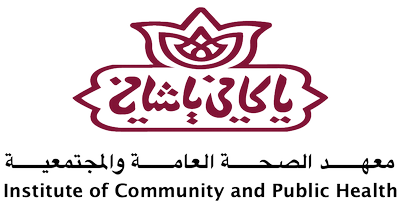

Background: Why Agronomy?
Coming from a developing country that relies on imports to supply the community with essential food made me concerned about the future food security for developing countries with limited resources. Moreover, climate change, pests' resistance to pesticides, and other environmental challenges are threatening the stability of food security for all countries.
I chose to be part of the agricultural sector, trying to contribute to improving food security levels by helping the production meet consumption. I was part of several research projects done for developing the agricultural sector in rural areas (see Projects section).
During my undergraduate years, I was building my experience in pest management and irrigation solutions, and publicising my experience to local farmers, which eventually led me to start a small business (Burj for Agricultural Solutions) where I traded for agricultural products, and provided paid/free consultancy services for local farmers, as well as providing solutions for challenges facing farmers with their crops.
Observing and facing lots of challenges while working in the field of crops and crop protection encouraged my curiosity towards things and made me question what is happening inside, at the Molecular Level. This question has shifted me from dreaming of being a traditional professional agronomist to aiming to be a researcher in the field of crop protection and work in the applied research for real-world solutions, that will contribute to better agricultural solutions, and eventually, a more food-secure world.
This curiosity made me fly to the UK and do an MSc in Plant Biotechnology and Enterprise, focusing on plant-pathogen interaction, after securing a fully-funded scholarship at Durham University.
Currently, I am working as a research analyst for testing the efficacy and ecotoxicology of plant protection products, especially biopesticides, on arable crops.
Educational Excellence
I studied BSc in Plant Production and Protection at the top university in Palestine, and I was honoured by the university as the top of my class upon graduation in 2020. During my undergraduate degree, I was a proactive student, linked with several researchers at the university, as well as my links with farmers, agronomists, and agronomy companies. I was chosen by the department dean's office to participate in two research projects (See Projects section), which were my first two research participation opportunities, from there, my journey in research started, and I do not hope it will end! During my undergraduate years, I participated in several conferences, workshops, farming tours, business tours, and much more. I was also volunteering as a touring guide to introduce school students and visitors to the facilities of the Department of Agriculture.
Further to my passion towards research and science, I did my best to win the highly competitive DPET scholarship to do an MSc in Plant Biotechnology and Enterprise at Durham University. This scholarship covered the tuition fees, lab bench money, and all life expenses for my time in Durham.
The course involved 5 taught modules, which were: Technologies in Biosciences, Bioinformatics and Data Science, Frontiers in Plant Science, Innovation and Technology Management, and Agriculture and Biotechnology, in addition to an extensive research project, in which I spent 6 months working full-time in a well-established molecular biology and biochemistry lab. Eventually, I got a distinction for my research project and a merit for the degree, and wide experience in plant molecular biology to add to my wallet.
Research Experience
I participated in conducting two main research projects in the fields of crop science, environmental research, and supporting rural farmers during my undergraduate studies with two research institutes, three main research projects in the fields of rural development, agribusiness, and public health with Pillars Consulting in 2022, an 8-month lab-based research project at Durham University, and continuing into my research journey with i2L Research, answering questions regarding the efficacy of newly-found pesticides and agrochemicals.
I have extensive experience in scientific research, although most of my work has primarily been for private companies and institutes, which is why I do not have any publications. Despite this, I am confident in my ability to contribute to academic research. During my time at the Department of Bioscience, Durham University, I gained experience in conducting research using molecular biology and biochemistry techniques, including but not limited to PCR, gene-cloning, animal and plant gene and protein expression techniques along with antibody work including immunoblotting and confocal microscopy.
My research project at Durham University was focused on the plant-pathogen interaction by studying post-translational modifications of a pattern recognition receptor, called CERK1, which is the responsible protein for the detection of pathogenic fungus by perceiving chitin. Arabidopsis thaliana was used as a model plant and Botrytis cinerea was used as a model fungus. The research findings contribute to the gap in the field of pathogen detection by plant cells and will be published as soon as the rest of the work on that project is done by current lab members at Ari Sadanandom's Lab (expected mid-2025).
Practical Experience
During my years doing my BSc degree, I enjoyed linking with farmers, agronomists, and agricultural companies, which gave me the chance to get training every summer in a different place as the following table explains:
| Year | Training Provider | Training |
|---|---|---|
| 2018 Summer | Hazera Seeds | Trained on the cultural practices of protected cucumbers and tomatoes, including choosing the varieties, land preparation, growing practices, nutrition programmes, and pest management |
| 2019 Summer | Saffarini Garden Centre | Trained on the basics of managing the ornamental nurseries, from growing of the seeds to care and marketing |
| 2020 Summer | Al Juneidi Nurseries | Trained on growing and caring of horticultural seedlings and learned different grafting techniques of fruit trees |
Projects
| Organization, Year, Location | Project Details |
|---|---|
| Applied Research Institute - Jerusalem, 2019-2020, West Bank, Palestine | Studied the technical (qualitative and quantitative), environmental, economic, and ethical effects of using treated wastewater for irrigating olives and forage crops. |
| PADRRIF & UAWC, 2020, North of West Bank, Palestine | Conducted research for studying the disasters and risks facing small farmers in rural areas, and establishing an awareness initiative to inform farmers regarding funding and compensation schemes offered by the Palestinian Disaster Risk Reduction and Insurance Fund. |
| An-Najah National University, 2020 | Studied the biology and management of downy mildew disease on cucumber grown under plastic-house conditions |
| Agricultural Development Association & Pillars Consulting, 2022, Ramallah, West Bank, Palestine | Conducted a technical, economic, and social study for introducing a new system for managing municipal wastes and introducing recycling and composting units in a rural village. |
| The Ministry of Agriculture & Pillars Consulting, 2022, West Bank, Palestine | Prepared a feasibility study for establishing a fruit and vegetable storage unit for the use of farmers in the rural areas in the north of the West Bank. |
| The Institute of Community and Public Health at Birzeit University & Pillars Consulting, 2022, Ramallah, West Bank, Palestine | Conducted research for studying the relationship between the consumption of fruit and vegetables and the commonness of non-communicable diseases among 2000 studied families in Palestine. |
| University of Durham, 2023 | Prepared a review research investigating the mode of action of Adepidyn(TM), produced by Syngenta, which is a broad-spectrum fungicide, and its efficacy against different fungal diseases. The review also studied the business model of Syngenta company after visiting their research site in Bracknell, UK. |
| University of Durham, 2023 | Prepared a review research investigating the process of producing Zerose (r), produced by Cargill, also known as erythritol, which is a zero-calorie sugar. The review also studied the Cargill company's business model and possible processing improvements by introducing biotechnological techniques. |
| University of Durham, 2023 | Studied the business model and business plan of a vertical farm under the University of York, named Grow It York. The study also included a review of LettUs Grow aeroponic technology, an improved irrigation technology. |
| University of Durham, 2023 | Prepared a business model analysis of Procter and Gamble company after a field visit to their site in Newcastle, UK. Studied Amylase detergent, a key detergent used in their products, and the processes behind its production at the bacterial level, as well as searched for plant-based sources for amylase. |
| University of Durham, 2023 | Analysis of RNA-seq of Arabidopsis thaliana with and without ETT mutation using R. |
Clients

i2L Research
Pillars Consulting
Burj Agristore
PADRIFF
UAWC
ARIJ

Birzeit University

Institue of Community and Public Health
Aman Transparency Palestine
150+ Small Farmers and Gardeners in the West Bank
i2L Research
Pillars Consulting
Burj Agristore
PADRIFF
UAWC
ARIJ
Birzeit University
Institue of Community and Public Health
Aman Transparency Palestine
150+ Small Farmers and Gardeners in the West Bank